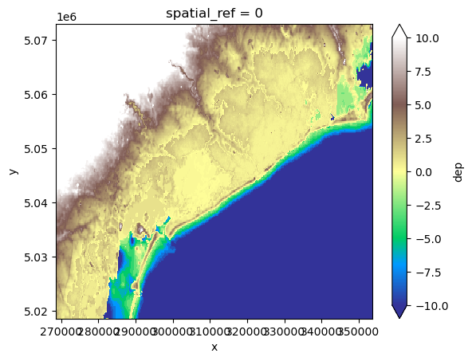

Tip
For an interactive online version click here:

Working with data in HydroMT#
[3]:
import os
import sys
import matplotlib.pyplot as plt
To obtain rasterdata, we can use a HydroMT DataCatalog. There are several pre-defined DataCatalogs:
artifact_data : Piave basin in Northern Italy (example data)
deltares_data : global datasets hosted on the p-drive
opendap_data (in progress …) : global tiled datasets hosted on the opendap server
[4]:
import hydromt
data_catalog = hydromt.DataCatalog(data_libs=["artifact_data"])
ds = data_catalog.get_rasterdataset("merit_hydro")
# merit hydro has multiple variables; select one
ds["elevtn"]
[4]:
<xarray.DataArray 'elevtn' (y: 1920, x: 1680)>
dask.array<getitem, shape=(1920, 1680), dtype=float32, chunksize=(1920, 1680), chunktype=numpy.ndarray>
Coordinates:
* x (x) float64 11.6 11.6 11.6 11.6 11.6 ... 13.0 13.0 13.0 13.0
* y (y) float64 46.8 46.8 46.8 46.8 46.8 ... 45.2 45.2 45.2 45.2
spatial_ref int32 0
Attributes:
AREA_OR_POINT: Area
_FillValue: -9999.0
source_file: elevtn.tifOften we don’t need the entire extent of certain datasets, but only part of it#
[5]:
# each model can be initialized with a data_catalog
# this works similar to the data_catalog above but now we use
from hydromt_sfincs import SfincsModel
# Initialize SfincsModel with the artifact data catalog which contains data for North Italy
sf = SfincsModel(data_libs=["deltares_data"], root="tmp_example")
inp_dict = {
"x0": 268650,
"y0": 5018550,
"dx": 200.0,
"dy": 200.0,
"nmax": 272,
"mmax": 425,
"rotation": 0,
"epsg": 32633,
}
# create grid
sf.setup_grid(**inp_dict)
[6]:
# since we already know where our model is, we minimize the amount of data that is read-in by specifying the region:
da_dep1 = sf.data_catalog.get_rasterdataset(
"merit_hydro", variables=["elevtn"], geom=sf.region, buffer=5
)
da_dep2 = sf.data_catalog.get_rasterdataset(
"gebco", variables=["elevtn"], geom=sf.region, buffer=5
)
Intermezzo: We can also download the data to a local folder#
[7]:
# List of data sources to export
source_list = ["fabdem", "gebco"]
# Geographic extent
bbox = sf.region.to_crs(4326).total_bounds
folder_name = "tmp_data_export"
sf.data_catalog.export_data(
data_root=folder_name,
bbox=bbox,
source_names=source_list,
meta={"version": "1"},
)
Local data can be added to the model as well#
[8]:
# Please specify the local geotiff you want to use:
localtiff = r"./tmp_data_export/fabdem.tif"
[9]:
# The first option that exist is openning raster data with for example xarray:
import xarray as xr
ds_xarray = xr.open_dataset(localtiff, engine="rasterio")
ds_xarray
[9]:
<xarray.Dataset>
Dimensions: (band: 1, x: 3992, y: 1844)
Coordinates:
* band (band) int32 1
* x (x) float64 12.02 12.02 12.03 12.03 ... 13.13 13.13 13.13 13.13
* y (y) float64 45.79 45.79 45.79 45.79 ... 45.28 45.28 45.28 45.28
spatial_ref int32 0
Data variables:
band_data (band, y, x) float32 ...[12]:
# The second and more elegant option is to use the data_catalog functionalities
# This also adds the data to the data_catalog, so you can use it later on in your workflow without having to specify the path again
# This also allows to keep track which data is actually used in your model (for reproducibility)
# and it has additional options to get the data for partly using bbox, region, zoom_level etc.
ds = sf.data_catalog.get_rasterdataset(
localtiff,
variables=["elevtn"],
geom=sf.region,
meta={"version": "1"},
)
# added to data_catalog
sf.data_catalog["fabdem"]
[12]:
data_type: RasterDataset
driver: raster
filesystem: local
meta:
version: '1'
path: c:\github\hydromt_sfincs\examples\tmp_data_export\fabdem.tif
For higher-resolution datasets, sometimes making xyz-tiles is beneficial for speed#
[13]:
fabdem = sf.data_catalog.get_rasterdataset("fabdem")
name = f"fabdem_xyz"
root = os.path.join(folder_name, name)
fabdem.raster.to_xyz_tiles(
root=root,
tile_size=256,
zoom_levels=[0, 1, 2, 3],
driver="GTiff",
compress="deflate",
)
Tiles at zoomlevel 3 smaller than tile_size 256
Now build a model that uses:#
local dataset : Local download of gebco
data catalog xyz-tiles : Local xyz tiles of fabdem
delft dashboard data (in progress): global tiled datasets hosted on the opendap server
[14]:
sf = SfincsModel(
data_libs=["artifact_data", os.path.join(folder_name, name, f"{name}.yml")],
root="tmp_example",
)
inp_dict = {
"x0": 268650,
"y0": 5018550,
"dx": 200.0,
"dy": 200.0,
"nmax": 272,
"mmax": 425,
"rotation": 0,
"epsg": 32633,
}
# create grid
sf.setup_grid(**inp_dict)
[15]:
da_dep1 = sf.data_catalog.get_rasterdataset(
"merit_hydro", variables=["elevtn"], geom=sf.region, buffer=5
)
da_dep2 = sf.data_catalog.get_rasterdataset(
os.path.join(folder_name, "gebco.tif"),
variables=["elevtn"],
)
# Make sure that you also load your local data_catalog if you want to use it in your model
# In this example, we only imported the fabdem_xyz.yml file, but this could be easily merged into one file to have a local data_catalog containing more datasets
da_dep3 = sf.data_catalog.get_rasterdataset(
"fabdem_xyz", variables=["elevtn"], zoom_level=(sf.config["dx"], "meter")
)
[16]:
# Now create the de_dep_lst. The order determines the priority of the datasets. Each dataset is a dictionary with the dataset (da) and merge_arguments
datasets_dep = [
{"da": da_dep1, "zmin": 0.001},
{"da": da_dep2, "offset": 0},
{"da": da_dep3, "zmin": 0.001, "merge_method": "last"},
]
[17]:
dep = sf.setup_dep(datasets_dep=datasets_dep)
[18]:
sf.grid["dep"].plot.imshow(vmin=-10, vmax=10, cmap="terrain")
[18]:
<matplotlib.image.AxesImage at 0x1287dfce7a0>
